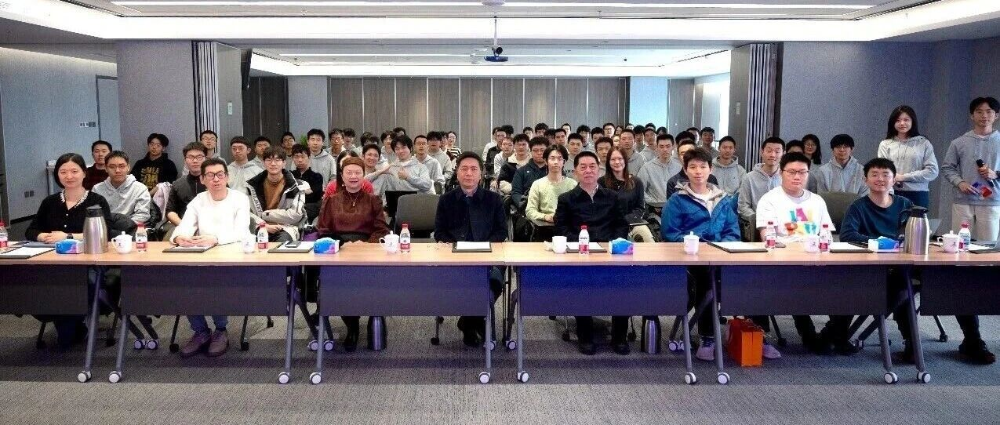

北京大学2025级通用人工智能实验班建班仪式圆满举行
2026年3月14日，北京大学通用人工智能实验班（以下简称“通班”）建班仪式在北京通用人工智能研究院（通研院）顺利举行。全体通班新生以及双学位学生以沉浸式科研参观为始，在庄重的建班仪式中聆听师长寄语，又在温馨的交流氛围中凝聚同窗情谊，正式开启了在通用人工智能领域的求学新征程。
沉浸式探访通研院，触摸AI前沿脉搏
建班仪式正式开始前，同学们以小组为单位，走进通研院开启深度参观体验。在工作人员的带领下，大家不仅全面了解了通研院的发展历程、学科布局与核心科研方向，还近距离感受了通研院在通用人工智能领域取得的一系列重磅成果。


最让同学们兴致盎然的，莫过于机器人实操体验环节。大家亲手操作智能机器人，直观感受通用人工智能技术的落地应用，从机械灵活的操作反馈，到前沿科研成果的展示讲解，每一处细节都让大家对通用人工智能这一学科有了更具象、更深刻的认知，也燃起了投身AI科研学习的满满热情。


庄重仪式启新篇，师长寄语明方向
参观结束后，建班仪式正式拉开帷幕。北京大学人工智能研究院朱松纯院长、北京大学元培学院刘建波副院长、北京大学人工智能研究院李文新副院长出席仪式，为通班新生送上殷切嘱托与美好期许。


北京大学人工智能研究院及智能学院院长朱松纯教授率先发表讲话。他紧密结合刚刚落幕的两会精神，深刻阐释了人工智能在国家科技建设与发展中的核心领军地位，点明了通用人工智能作为前沿科技领域核心赛道的重要意义。他勉励在场的通班学子，要把握北大优质的学习与科研资源，立足通用人工智能的学科前沿，深耕专业知识，锤炼科研本领，肩负起新时代科技人才的使命，在AI领域勇攀高峰、有所作为。

随后，北京大学元培学院副院长刘建波教授发言。他指出通班是元培学院通识教育与专业教育深度融合的有力实践。作为通班人才培养的重要依托单位，元培学院将充分发挥通识教育优势，在课程资源、学术支持等方面为学子提供坚实保障，助力大家在学科交叉的沃土中夯实根基、稳步成长。

北京大学人工智能研究院副院长李文新教授也寄语全体同学，希望大家脚踏实地、潜心向学，在通用人工智能的学习与探索中不断突破自我，成长为兼具专业实力与创新精神的AI人才。她勉励全体通班同学珍惜优质学习平台，扎实学好专业知识，积极投身科研实践，始终保持对通用人工智能领域的探索热情，在学习中深耕不辍、提升自我，努力成长为能担当科技使命的优秀人才。

仪式上，通班优秀毕业生、在读博士生代表李珩立、李宇飏还结合自身科研经历，分享了在通用人工智能领域的学习心得、科研历程与成长感悟，为新生们梳理了学习思路、提供了科研参考。


在互动提问环节，同学们踊跃发言，围绕学科学习、科研方向、未来发展等问题与师长们深入交流，现场学术氛围浓厚，师生互动热烈而融洽。


回顾通班历程，共绘未来蓝图
于亚丽老师上台，带领大家回顾了通用人工智能实验班的发展历程。从班级筹备规划到落地建设，详细介绍了班级依托北大与通研院优势资源、培养顶尖AI人才的培养定位，让新生们对班级的发展脉络与育人目标有了清晰认知。

现场举行班主任任命仪式，由朱松纯老师正式宣布通班两位班主任的任职决定。两位班主任将全程陪伴同学们的学业与生活，为大家提供学习指导和成长支持，助力班级稳步建设。

【朱老师为张弛老师和刘航欣老师颁发聘书】
温馨晚宴凝心气，共话AI少年志
仪式尾声，一场温馨的披萨宴让现场氛围愈发轻松温暖。两位班主任与同学们围坐在一起，褪去仪式的庄重感，以亲切闲聊的方式开启轻松互动。大家一边享用热气腾腾的美食，一边畅聊学习中的困惑、对AI科研的兴趣，以及对未来大学生涯的规划，从专业知识的钻研方法，到学科探索的新奇想法，从日常求学的点滴感悟，到对班级集体的美好期待，无话不聊。

这场轻松自在的欢聚，没有了正式仪式的拘谨，不仅快速拉近了同窗之间的距离，也让同学们在班主任的贴心陪伴下，真切感受到了通班这个新集体的温暖与归属感，在欢声笑语中，为本次建班仪式画上了圆满的句号。
结语：通古今之变，书青春华章
从硬核的科研参观，到暖心的师长寄语，再到温馨的集体欢聚，本次建班仪式不仅是通班学子开启AI求学之路的重要起点，更让大家明确了自身的学习目标与时代使命。愿每一位通班学子都能以此为序，在通用人工智能的广阔天地里笃行不怠、逐梦前行，在科技强国的征程中书写青春华章！
以通前沿为始，推开通研院的大门，亲手拨动智能机器人的脉搏，在硬核科研的一线感知通用人工智能的呼吸，让"科教融合"的基因从入学之初便植入骨髓。
以通师道为引，在两会精神的回响中擘画AI宏图，感受各位老师春风化雨的期许，于优秀博士生的科研漫谈中拨云见日，让学术薪火在庄重的仪式里生生不息。
以通文理为脉，借北大文科之深厚、理科之精微，融元培通识之广博，贯通计算机视觉、自然语言处理、认知推理、机器学习、机器人学、多智能体六大领域，将研究生阶段的知识甘霖洒向本科沃土，浇灌出全球首批科班出身的AI栋梁。
以通古今为志，立于北大登顶AIRankings的历史新阶，怀揣“为机器立心，为人文赋理”的学术理想，在通用人工智能的浩瀚星海中乘风破浪，用青春的笔触为科技强国的宏伟画卷添上最亮丽的一笔。

此次建班仪式不仅为通用人工智能实验班拉开了崭新序幕，更凝聚起全体同学深耕AI领域、勇攀科研高峰的信念与力量。站在新的起点上，愿每一位通班学子牢记师长嘱托，以饱满的热情投入学习与科研，在追逐AI梦想的道路上脚踏实地、锐意进取，不断锤炼本领、增长才干，在新时代科技浪潮中找准方向、勇毅前行，用专业与热爱书写青春答卷，为我国人工智能事业发展贡献属于北大新青年的智慧与担当。
选图 | 闫瑾
文案 | 张云琦 郭浩充
排版 | 李其禛 何其乐